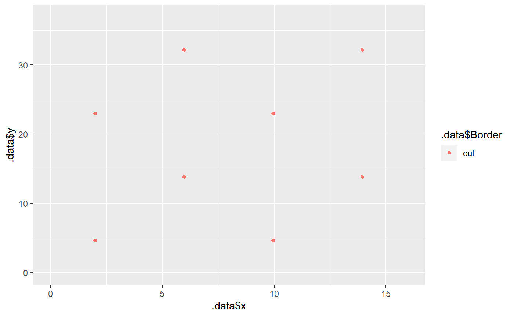

design_plot.RdHelp designing a quincunx planting pattern of palm stand.
design_plot(rows = 1, cols = 1, x_dist = NULL, y_dist = NULL, x0 = 0)
| rows | How many times the voronoi sub-plot is repeated in rows? |
|---|---|
| cols | How many times the voronoi sub-plot is repeated in columns? |
| x_dist | The inter-row distance (m). See details. |
| y_dist | The intra-row distance (m). See details. |
| x0 | The minimum X coordinates |
A list of two:
the data.frame with all information to make an Open Plant Scene file.
the ggplot object associated to the design
If only one of \(x_{dist}\) or \(y_{dist}\) is given, the function will compute the other distance using the following equation: $$\sqrt{z_{dist}^2-\left(\frac{z_{dist}}{2}\right)^2}$$ with \(z_{dist}\) being \(y_{dist}\) if only \(x_{dist}\) is provided, and reciprocally.
If \(y_{dist}\) and \(x_{dist}\) are given for the distance between trees and not intra/inter-row distance, a transformation has to be done beforehand (see example)
The design of the plot is based on a quincunx planting pattern. The whole stand can be thought
as a matrix with each cell being a Voronoi sub-plot of two trees. The cols argument represent
the number of cells repeated in x, and the rows argument in y.
If the user wants to use the ARCHIMED model for further computations, and if the torricty option is activated, only the Voronoï sample of the design is needed (i.e. the smaller possible representation of the system) because the design will be virtually duplicated to infinity.
# design a plot with a distance of 9.2 m between each palm trees: design_plot(rows=2, cols= 2, y_dist = 9.2)#> Warning: `cols` is now required. #> Please use `cols = c(x, y, xmax, ymax, xmin, ymin, Col, Row)`#> $design #> # A tibble: 8 x 16 #> x y xmax ymax xmin ymin Col Row z scale inclinationAzim~ #> <dbl> <dbl> <dbl> <dbl> <dbl> <dbl> <int> <int> <dbl> <dbl> <dbl> #> 1 1.99 4.6 15.9 36.8 0 0 1 1 0 1 0 #> 2 5.98 13.8 15.9 36.8 0 0 1 1 0 1 0 #> 3 1.99 23 15.9 36.8 0 0 1 2 0 1 0 #> 4 5.98 32.2 15.9 36.8 0 0 1 2 0 1 0 #> 5 9.96 4.6 15.9 36.8 0 0 2 1 0 1 0 #> 6 13.9 13.8 15.9 36.8 0 0 2 1 0 1 0 #> 7 9.96 23 15.9 36.8 0 0 2 2 0 1 0 #> 8 13.9 32.2 15.9 36.8 0 0 2 2 0 1 0 #> # ... with 5 more variables: inclinationAngle <dbl>, stemTwist <dbl>, #> # Border_x <chr>, Border_y <chr>, Border <chr> #> #> $plot#>